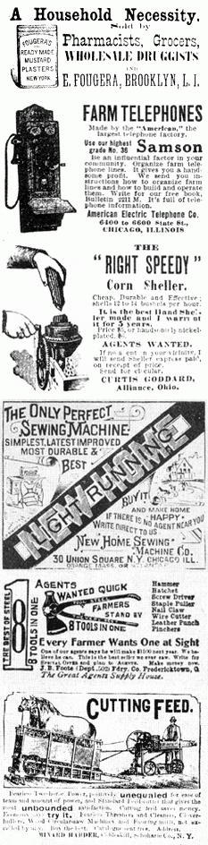
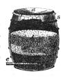
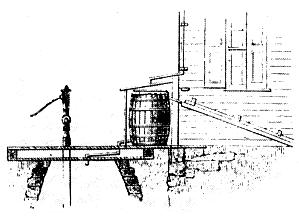
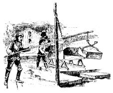
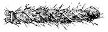
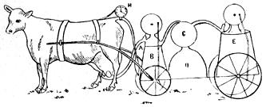
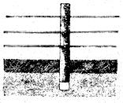
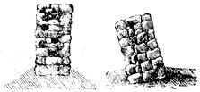
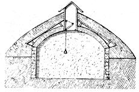
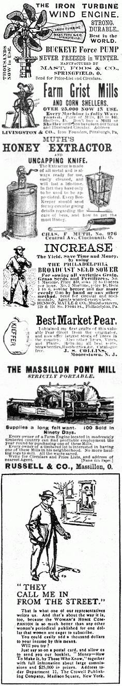

Mother has been compared so many times to the early farm publications, that we've gone back to some 1882 AMERICAN AGRICULTURISTs, 1892 FARM AND HOMEs and 1906 FARM AND FIRESIDEs to make a few comparisons. Yes, sure enough. Those old periodicals were mainly crammed full of how-to-articles and letters from their readers just like MOTHER... with all the ads stuck off in the back just like MOTHER. Matter of fact, we felt so much at home rummaging around in those "outdated" farm papers that we decided to bring you the best of what we found. Here then, are four pages of mostly good ideas... a few "just for fun" tips... and some great old ads from the past.
Suggestions for the Season.
The Close of the Year.
December is the first month of winter and the last of the year. It is a most fitting time for taking an "account of stock." Storekeepers and businessmen know the importance of this work. The goods are overhauled and an exact list of all the articles, with their value, is made out; and from this, with the expenditures, the balance for the year is obtained. The farmer should do the same thing with his farm property, that he may also know how much he has made or lost during the year. The task is not a great one, as the sheep, horses, implements, grain, etc., can be catalogued rapidly, and when it is done there is a feeling of satisfaction that more than pays for the trouble. It may be somewhat difficult to estimate accurately some of the items, as for example the amount of labor expended upon a crop still upon the ground. A system of farm accounts kept from week to week will aid greatly in all such cases.
A Filter for Cistern.
BY GRUNDY, CHRISTIAN CO., ILL.
While visiting a friend last year, I was surprised to find that he was compelled to use cistern water for alt purposes. In answer to my inquiries, he stated that no well water was to be had in that section short of one hundred feet, and then the quality was such that no one could use it. Springs were unknown. Three miles distant was a creek to which all live stock was driven, when cisterns and ponds failed. The water in the house cistern was simply abominable, caused by keeping the spout turned on, and running in every drop that felt on the house. At his earnest solicitation, I constructed a filter for his cistern, of which I give a sketch. He recently informed me that it works like a charm and that his neighbors are all using it. Figure 1 allows the filter. It is a large barrel with one end knocked out. At the bottom is a layer of fine charcoal, d . Above this is a layer of fine gravel, c ; over this is a layer of coarse gravel, b on the top of the barrel is a thin strainer, a, held in place by a hoop which fits over the barrel. The cloth is depressed in the center as seen In the cut. This strainer catches all leaves and coarse dirt, and should be cleaned after every shower. Some use a wire strainer of very- fine mesh, but the cloth answers the purpose very well. The filtered water flows through a hole, e . Into this hole a metal tube a foot or more long, punched full of holes, and covered with wire netting, is inserted. Six inches below the top is another hole, s; which is fitted with a short pipe as seen is figure 2.
During a heavy shower the overflow runs out of this hole, and into a spout provided for it. Figure 2 shows the general arrangement of the entire apparatus. The barrel has a small shed built ever it, to protect it from the sun and weather. This shed should open at one end, so the barrel can be taken out at any time. The top is movable to allow the strainer to be cleaned. The lower section of the water-spout should be loose, so that it may be moved up or down, end turned. In figure 2 the elbow rests on a block, or bracket, and the water flows through a hole in the cover of the shed, into the barrel. When the cistern is full, the elbow is turned, and drops down to a block, and throws the water into the spout to be carried away, or into a " wash water" cistern nearby. The above arrangement may be modified to suit different circumstances and places. When rain water is used exclusively for cooking and drinking, it is best to have a cistern for it alone, and a separate one for wash water. At the beginning of a storm, it is well to lot the rain wash the roof for an hour or two, before the stream is allowed to enter the cistern. This is especially necessary where pigeons and outer birds collect upon the roots, as well us to wash off accumulated dust.
WINTER RATIONS FOR POULTRY.
As staple food, nothing is better and nothing is so cheap as good Indian corn, and one meal a day may safely be of this grain, either ground or whole. Grinding is of less consequence for poultry than for the larger animals, as every bird carries a complete mill for this purpose, and puts in a new run of stones as often as it can get to the ground. A variety of grain is always acceptable; wheat screenings, buckwheat, oats, and rye, the last rather sparingly. Cooked food is highly relished-potatoes or turnips, boiled and mashed with Indian meal, scalded and fed warm, especially on frosty mornings. Fowls are very fond of vegetables, eaten raw, and if-sugar-beets or mangels or turnips are put within reach, they will help themselves. For an appetizer, nothing is better than cabbage or the tops o£ turnips. Hens never tire of cabbage, and a good supply for winter should always be laid in. Animal food in some shape must be furnished, if you want plenty of eggs, Shore farmers can get fish offal from the markets, clams from the banks, or minnows from the ditches. Skimmed milk is always in order, and meat scraps front fat trying establishments, sold in large cakes, and placed where the hens have free access to them, are a cheap and excellent food for laying poultry.
Secure the Ice Crop.
When there is good solid ice six inches thick the work of filling the ice house should not be delayed. There are so many risks to run in waiting for thicker ice, that it is much better to gather the crop at the very first opportunity. If snow comes while the ice to being formed, it should be removed while it is fresh; this may be done with a snow-push or a short and a heavy stable broom; and on a large scale with a snow plow and scraper. Icemen who harvest many thousand tons, have a complete outfit of labor-saving tools for their work. The farmer, with only a small house, holding 25 to 30 tons, needs a common cross-cut saw with one han dle removed. A splitting bar may be made of a largo chisel with along handle. A pike for handling the ice cakes while they are in the water, is very convenient, and can be made by any blacksmith at a trilling expense. Ice-tongs are not essential; but are so handy and cheap, that it usually pays to be provided with them. The ice to be cut is first lined by using a hatchet or axe along a straight-edge board; after sawing, the strips are cut into squares by first making a deep groove, and afterwards using the splitting chisel. Ice is heavy and difficult to handle, and advantage should be taken of the ease with which it slides aver smooth surfaces. Loading the sled or wagon from the pond or river, is usually the hardest labor of the ice harvest. This can be made comparatively easy in many places, by drawing the ice blocks up an inclined shute made of planks with narrow edges of boards. A number of blocks of lee doing placed in a line at the submerged end of the shute, a spike is forced into the rear one, and with the team attached to the spike, the whole row is slid up into the box of the sled or wagon.
LOADING ICE EASILY.
Mr. "C. G. T.," Dutchess Co., N. Y., sends us a sketch of a method of loading ice, here illustrated, and writes : Whenever ice must be hauled on sleds, the following method of loading will save a great deal of heavy lifting. A pole of sufficient length to reach the bottom of the pond is firmly set through a hole cut in the ice. At a suitable hight, a chain with a loop at the end is fastened; through this loop another pole is passed, which acts as a lever. At one end of this lever the ice-tongs are attached with a rope or chain. A canal is cut, the ice blocks floated up to it, when they may be hoisted from the water directly into the sled.
There are a few general rules for the care of live stock in winter, which are of universal application:
First. -They should lie dry, whether bedded or not, A dry floor is far better than wet bedding. Spar or slat floors, through which urine will quickly pass, and which give the animals a lever standing place, are especially to be advised. A good degree of comfort may be had oil such floors, but a full supply of dry litter-straw, leaves, swamp bay, etc.-certainly makes all kinds of stock more comfortable.
Second. -Shelter saves fodder, wherever lumber can be easily obtained, to a degree which few practical men are aware of. The warmer the stables are, the better, except perhaps for sheep. But with close, warm stables, it is essential that the manure heap should be where it will not contaminate the air, and that there should be perfect ventilation so arranged as not to cause drafts of air.
Third. -As to feed. This should be given with the utmost regularity and uniformity-never more than will be all eaten up long before the next feeding time. Then the animals have an appetite for their food, so that coarse fodder may be first given, to be followed with better, and by grain in some form, if this be a part of the daily ration. This is no doubt the most economical system, securing the least waste and best digestion of all kinds of fodder used in the ordinary way.
Fourth. -Grooming and care of the animals are a most valuable means of keeping them in health as well as of saving feed. The skin of an animal existing in a state of nature is washed by every shower, brushed and carded by every bush, licked by its mates, rubbed by the ground in rolling, and in various ways kept free from accumulations of its own exfoliations, from the stoppage of its pores by sweat, and from its own inherent dirt. A healthy skin means warmth, health, life, and vigor, other things being about right, and we can secure this in horses and cattle only by grooming. A straw brush, made by twisting up a thick rope of straw until it becomes very hard and is inclined to kink, than doubling it and twisting it into a stiff mass a foot to 18 inches long perhaps, with the ends tucked and fastened, will do a deal of rubbing before it goes to pieces, and is for purposes of friction, rubbing off mud, etc., better than any other brush. Clean skills are just as important for cows as for horses, and the use of the brush is recommended in the cattle stalls.
Fifth . -Sunshine. Fresh air and sunshine are health-giving and invigorating principles and not one of our living dependents should be without them. In the thorough ventilation recommended, good air has been provided for, nevertheless all well fed animals enjoy and air the better for air breathed out of doors even on our coldest days and a sun-bath of an hour or two is of the highest value. Stables should be constructed with reference to sunlight, and long narrow wings for stables, both for horses and cattle, have in this particular a great advantage over basement stables under the whole barn, as the former may have windows for the admission of sunlight and air throughout their entire length.
Sixth -Give all animals free access to salt. With plenty of feed, horses and sheep will stand any degree of dry cold incident to the climate of the United States and Canada. Neat cattle need more protection, and it is really cruel to expose them unprotected to winter weather. Swine need thoroughly warm dry quarters to winter and will hardly survive exposure such as other domestic animals will bear perfectly well. So with poultry-while turkeys will bear the severest storms and cold roosting in the most exposed positions, fowls seek shelter either of thick evergreens or houses and ducks and geese the protection of the manure pile or the hay stack. In sheltering all animals and poultry, which we do from motives of economy, it is well to bear in mind their natural instincts, that those which need it most are best protected.
When to Apply Manure.
The common practice is to cart the manure from the barnyard once a year; usually fit the spring. In this way the hauling is done, when other work is pressing, and while the ground is soft. It is better to draw out the manure exposed in open yards, as it accumulates, and drop it in heaps in the fields where it is to be used. With the best facilities for keeping the manure-that is , with a barn-cellar-there is less loss in keeping it under cover, and when well rotted, apply it to the ground just at the tuna time when it will be of the most benefit to the crop. Manure is considered as so much capital used in growing the crop, and bears interest only as it is used by the plants. If beets or turnips need the most manure in midsummer, it is economy to apply it then, provided there is the proper facility for making, storing, and turning out this valuable fertilizer every month in the year. Grass lands can make use of manure at dearly all times, and upon these it may be spread in winter with economy of labor and excellent results.
Getting Ready for Spring
A light and warm work-shop is a good investment. Men and boys cannot be expected to do much work if their fingers are numbed with cold, but if a suitable place and proper facilities are provided, the stormy days of winter may be turned to good account. Among the needed preparations for spring is putting the implements in good order. Not merely the mowers and other costly implements, but even the hoe and spade will do better work it, property ground. All iron and steel tools and parts of machines call be readily preserved from rust by the use of a mixture of lard and rosin, melted together (an ounce of rosin to a pound of lard), and stirred while cooling. This may be applied by means of a rag, or better, a swab, made by winding a bit of cloth around the end of a stick. Only a light coating is needed, and this is more readily applied if the article be warm. If the wood-work of machines was originally painted, it is well to repaint when necessary, but if it was merely oiled, use linseed oil again. For wood that has not been painted or oiled crude petroleum, (several applications to saturate the wood,) is an excellent preservative. Where there are massy small tools, such as the trowels, hand forks, etc., it is well to paint a portion of the handles bright red. Such affairs are quite apt to be left where last used, or dropped in going from place to place. The red makes them very conspicuous, and will often save much hunting. Besides repairing, various garden conveniences may be made. Markers of various widths are useful, though it is quite as convenient to have a marker so arranged that it will serve for several distances. The head of the marker should be a piece of scantling, and the teeth of hard wood. Placing one row of teeth nine inches apart, and the teeth of the other row a foot apart, will allow, by the use of every mark, or every other one, rows at four different distances to be made-9, 12, and 24 inches. A good wooden reel for the garden line is much more useful than the poorly made iron ones so often sold. It is well to have ready the boxes for raising plants from seeds, either in the house or in the hot-bed . Those for the window may be a foot wide, three inches deep, and of a length corresponding to the width of the window frame. Those for use in the hot-beds are most cheaply made from the boxes in which starch, soap, and other articles are purchased. These can be bought when empty at a low price and by cutting them in halves two may be made from each, the cover forming the bottom of one of them. Boxes without either top or bottom with mosquito netting tacked on in place of the cover are of great service in keeping insects from melon or other vines.
THE COW OF THE FUTURE AND HER OUTFIT.
A Subscription Fraud-Look out for Him
One of our subscribers at St. Thomas, Canada, writes us that a good looking man (they are always good looking and well dressed) with a wooden leg, is taking subscriptions for various newspapers and giving receipts for the same, signing the name of the firm or party publishing the paper. He is the worst kind of a swindler, besides being a forger, as this parties whose receipts were used by him say that the signature is a forgery and that they employ no wooden-legged men or thieves in their business. Another Correspondent
writes us that he sent in response to a glowing New York City advertisement, $5 to pay for some of the goods advertised therein. He never. received the goods, and wished us to look the parties up and, get his money for him. He sent us an order on them for the amount, but he might as well have sent us a Deed for "Lots in the Moon," as we should have about as good a prospect of finding them, as of finding the firm he would have us look for. Moral-Avoid all the flashy advertisements you see, as they are only a net spread to catch the unwary.
Still Another
complaint comes from Glens Falls in the State, and encloses an advertisement of a would-be Gent's Furnishing House situated (or supposed to be) in the immediate neighborhood of this office. We would say to our friend that it is only an old swindle under a new name. There is no such store as the company advertise, and any one who sends to this man, whose name begins with R and is spelled with four syllables, $9 for six shirts and expects to receive them, will die of old age before they arrive.
Corn Oysters
To six good-sized ears of corn add three well-beaten eggs, one tablespoonful of cream and one of flour; salt and pepper to taste, fry in butter and serve hot.
Posts Lifted by Frost
Fig. 1 - POST LIFTED BY FROST.
The curious expansion of water freezing, and of soils filled with water, has a telling effect upon fence posts standing in damp ground. The top soil around a fence post, if dry, or only slightly moist, does not affect the post during winter. But if the particles of soil are saturated with water, on freezing the whole expands an eighth; so that, when frozen eight inches deep, the post is lifted an inch out of the lower unfrozen soil. If the frost penetrates sixteen inches, the post rises two inches. When the frost leaves, and the surface soil sinks back, the post remains two inches out of the ground. A few freezings of the surface will thus inevitably throw the post out so far as to render it useless, unless it is driven down every spring before the open space left at its bottom is filled by soil washed in. For this reason it is advisable to make the extreme lower ends of fence and other posts a little tapering, or at least to clip off the bottom corners so that they can be driven down more easily when lifted. We will say now in advance, that all fence and other posts should be examined early every spring, and those at all lifted be driven back with a beetle or sledge hammer. A stitch in time will save nine, here. On naturally dry, or drained land, the above trouble will not be experienced, except at places where water flows through them from a higher to a lower level, thus keeping them wet, or very damp.
Destroying Stone Fence Walls.
When these stand on water-saturated soil, the expansion by cold, if uniform on both sides, does not affect them. But almost invariably, epecially if running in any direction but north and south, and often then the soil under them will be more frozen or sooner thawed on one side than on the other, and thus they will be thrown out of perpendicular, and more or less disturbed. Only four inches of frozen wet ground under one side of a stone wall, and none under the other, will lift the frozen side half an inch, or enough to tilt five inches to one side the top of a wall five feet high and two feet thick at the bottom-enough to greatly disturb it, and ultimately throw it down. A wall set down two or three feet deep in the ground will be similarly affected, if water stands around its base. There are two remedies. One is to run a drain under or near the wall, deep enough to carry off all standing water about it, below the freezing point. The other is, to raise the earth into a ridge before the wall is built, high enough to have it always dry. This is readily done by successive plowings, turning the furrows to the center of where the wall is to stand. The saving of foundation stone will far more than cover the cost of raising the ridge; and the fence will not need to be so high if standing on such a ridge, as animals will not jump it so well when they must spring from ground rising in front of them.
Leaves and Dry Dirt
Lay in a supply of leaves and dry dirt before the cold season opens and the ground is frozen. The fowls will have to remain during a large portion of their time in the poultry-house in the winter, and will require materials for, the dust bath. For, this purpose there is nothing superior to coal-ashes, but they must be sifted twice, first to remove this coarse materials, and next through a fine sieve, in order that only the finer portions may be used. A dust bath should be composed of dust (not coarse dirt), in order that the hens may throw it well into their feathers. Dry dirt is always plentiful, and should be placed under shelter, especially if, there is air insufficient supply of ashes. Wood-ashes should not be used for the dust bath, as they contain potash and irritate the skin. Leaves are the best of all materials for the floor, as they not only induce the hens to scratch, but to a certain extent prevent draughts of air on, the floor.
A Frost Proof Cellar.
A good cellar for storing roofs, etc,, that is frost proof in winter, and cool in summer, maybe constructed as follows: The ground should be excavated for four feet, and walls of stone built, with an arching of brick to cover the whole. An air space is left between the bricks and the earth above them. This is made by laying scantling lengthwise of the roof, and covering them with boards or plank well battened. This secures a non-conducting air space, which prevents the passage of moisture from the outside. A ventilator in each gable end of the cellar, provides for a circulation of air, and the escape of any moisture that might otherwise collect on the surface of the boards. There should be a sash or trap door in the ventilator shaft, that may be opened or closed by means of a cord and weight, which hang down in the cellar. In hot, summer weather it may be necessary to provide some shade over the ventilators. A cross section of such a cellar is shown in the engraving.
Controlling Broody Hens
If it is desirable to prevent broody hens from incubating at this season, it can be done with but little difficulty. Simply provide a coop, raised a few inches from the floor, the coop to have a bottom made of slats, so as to allow of free circulation of air under the hen. A broody hen's efforts are directed to warming her eggs. She does not relish cold draughts underneath her body, and soon leaves the coop in disgust. This method is humane and efficacious. In other words the hen must feel the accumulating warmth of the nest or, coop in order to remain at her work.
TO GET RID OF RATS.
Everybody has a method of getting rid of rats, and all are good at times. To the farmer and poultry keeper these rodents are a terrible nuisance and means of loss. They will capture a half-grown chicken before your eyes and escape with him be fore you can do anything. It is very hard to trap them because they won't go near the traps after one or two have been caught. Many do not know that spread ing a square yard of thin cloth over the trap will deceive them. Place the bait on the pan of the trap, but on top of the cloth. It rats cannot be driven out of the building, poison in some form will kill many. Rough on Rats is sure death,but is dange ous and must be kept away, from poultry and all other stock. Precipitated carbonate of baryta, which is a poisonous, heavy, white powder, devoid of taste and smell, has been tried and proved very effective. Mix with four times its weight of barley meal, make a stiff paste with water, and introduce small pellets of it into the rat holes. The smallest quantity proves fatal, and it seems to immediately paralyze the hind quarters, so the rat will not get away and the where he could be eaten by domestic animals and prove fatal to them. It has been proved that neither pigeons nor fowls will touch the paste. Rats may be also killed by feeding them regularly in one place and then a few days substitute dry plaster of parts and a little meal for the regular food. Have a pail of water where they can drink and the plaster of parts will harden inside and kill them. Whether or not a method is cruel is hardly to be considered inthis connection, and we give this for what it is worth: Catch several rate without injuring them and put them in a tight cage. Do not feed them anything and they will eat each other, until all but one are eaten, and he may then be let loose. He has now such a love for a cannibal diet that he will soon eat every rat on the place. Rats may also be scared away by catching one or two, covering them with tar and feathers, and letting them go, or by putting a leather collar and small bell on the neck, or painting them with phosphorus. They will run after the others, and all leave the building for good. Cover the floor near their holes with caustic potassa; they will get sore feet, and licking their feet will get sore mouths. A spry cat or dog will generally see that these rodents keep out of the way.
TO PREPARE AN ASPARAGUS BED.
The preparation of an asparagus bed should be made with more care than for most vegetables as it is to be a permanent crop. The ground should be thoroughly drained, naturally or artificially, and preferably of a rather light sandy loam. This should be trenched and a heavy coat of well-rotted manure applied. Either one or two-year-old plants are set, which may be raised from seed or bought of nurserymen. Set in rows not less than 4 ft apart, 6 is better, and 3 ft in the row. Set the roots from 4 to 6 in below the surface so as to cultivate over the crowns. The beds will last longer and stand drouth better when set deep. The plane may be set in either spring or fall. If in the spring, as soon as the ground is dry enough to work; and if in the fall as soon as plants can be obtained, which is usually early in October. Fall setting where posssible is preferable for the roots have the chance to form and start earlier the next spring.
To Winter Celery Successfully out of doors it should be banked to the very tips, the earth being kept away from the upper part of the celery by boards. Over the top a trough or boards may be nailed to keep off the rain. This roof should be heavily covered with coarse strawy manure. This will keep it safely until Christmas and during the severe weather later; if litter be placed above this it will probably keep till spring. Frequent inspection will dictate whether still greater protection will be required. With a very large quantity of celery for market, a trench 1 ft wide and 18 in to 2 ft deep may be dug. Tile may be placed in the bottom and the celery packed closely together in the trench. It should then be walled up as previously described and covered with an inverted trough of hoards.
A celery house is in use in many places. It is little more than a roof on the ground, the object being to have the roofers near the top of the celery as possible. The celery is packed in rows; with paths between through which the attendant may occasionally crawl to inspect it. The greatest danger will be from keeping it too warm and inducing rotting. There will be no danger of too much ventilation in the mildest weather. Whatever the roof is composted of it should be tight, as water dripping through upon the crop will surely rot it. It is not necessary to put up the celery until late in the season. [Hollister Sage, Fairfield CO., Ct.]
How to PeelTomatoes. Nearly all cook books say, "pour boiling water over ripe tomatoes and then skin them," and at least 99 In every 100 persons attempt to peel theta in this manner, and consequently do it with much difficulty and very imperfectly. This is the proper way to peel tomatoes: Cover them with boiling water half a minute, then lay them in cold water till these are perfectly cold, when the skin can be slipped off without difficulty leaving the tomatoes unbroken and as firm as before they were scolded.
|
 Fig. 1 SECTION OF FILTER. |
|
 Fig. 1 POST LIFTED BY FROST. |
|
 2. WALL ON A RIDGE 3. WALL ON LEVEL GROUND |
|
|
|
 |
|
 |
|
 |
|
 |
|
 |
|
 |
|
 |